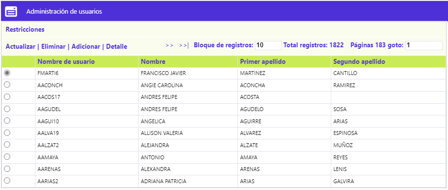
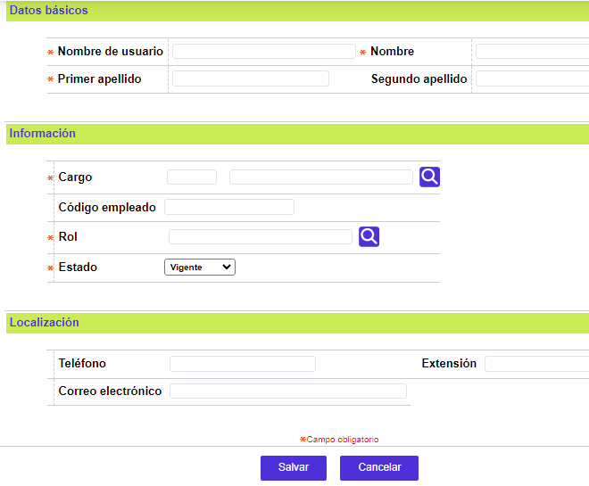
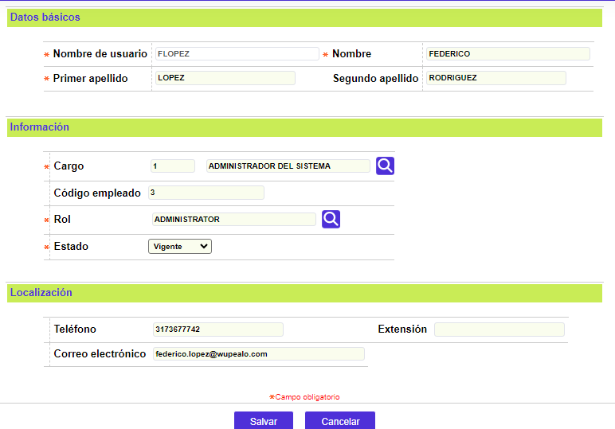
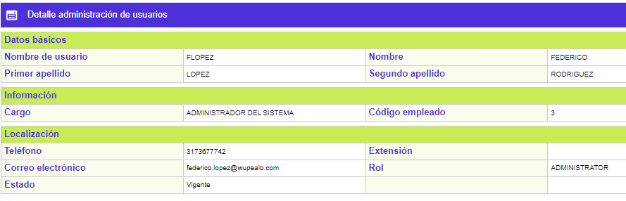

Administración de Usuarios
Desde este formulario, se habilita la consulta y mantenimiento de una tabla en la cual se almacena toda la información relacionada con los usuarios nombrados para la corporación o entidad financiera, lo cual requiere que, como medida de seguridad, el acceso a la misma sea altamente restringido.

El formulario cuenta con un filtro que permite efectuar consultar por el código y/o el nombre del usuario
El formulario contiene los enlaces: Actualizar, Eliminar, Adicionar,Detalle y Restricciones
Adicionar: Al activar ese enlace se despliega un formulario dividido en cuatro bloques de datos (Básicos, Información, Localización) con los siguientes campos.

Descripción de Campos
|
Código |
Campo alfanumérico de 16 dígitos, obligatorio, en el que se registra un código, pseudónimo o abreviatura que identifica a cada usuario del Sistema. |
|
Nombre |
En este campo alfanumérico de 25 posiciones, obligatorio, se registra el nombre de la persona a quien corresponde el usuario a definir. |
|
Primer apellido |
Campo alfanumérico de 20 posiciones, obligatorio, en el que se registra el primer apellido del usuario nombrado. |
|
Segundo apellido |
En este campo alfanumérico de 20 posicione, no obligatorio, se registra el segundo apellido del usuario nombrado. |
|
Cargo |
Campo obligatorio con lista de valores de la que se debe seleccionar el cargo desempeñado por el usuario en la entidad. |
|
Código empleado |
En este campo alfanumérico de 16 dígitos, no obligatorio, se registra el código interno del funcionario o en su defecto el número de documento de identificación. |
|
Teléfono |
En este campo alfanumérico de 20 dígitos, no obligatorio, se registran los números telefónicos en los que es posible ubicar al usuario. |
|
Extensión |
Campo alfanumérico de 20 dígitos, no obligatorio, en el que se indican los números de extensión en los que es posible ubicar al usuario. |
|
Correo electrónico |
En este campo alfanumérico de 30 dígitos, no obligatorio, se registra la dirección electrónica a la que es posible enviar e-mails al usuario. Cuando se ejecutan procesos desde automatización, el sistema envía a esta dirección los mails en los que informa al usuario el resultado de la ejecución de los procesos lanzados por él. |
Actualizar: si el usuario selecciona un registro e invoca la opción Actualizar se despliega un formulario con un único campo NO modificable que es el Código.

Detalle: si el usuario selecciona un registro e invoca la opción Detalle se despliega un formulario con toda la información del registro y en el cual ninguno de sus campos es modificable.

Restricciones : una vez se activa el enlace Restricciones, se despliega un formulario que muestra el o los Roles de negocio a los cuales tiene acceso el usuario desde el cuál se invocó. Ésta maniobrabilidad tiene como propósito poder diferenciar los atributos entre usuarios que pertenezcan a un mismo rol; basta con navegar por los menús y submenús hasta ubicar la o las opciones que se requieran deshabilidar / habilitar o restringir / autorizar, para el usuario desde el cuál se invocó, condición dada por el estado del checkbox Permisos, que solo se habilitan para aquellos registros de tipo Funcionalidad; para poder evidenciar el cambio es necesario primero activar el botón especial Salvar y segundo que el usuario afectado, reingrese al aplicativo.